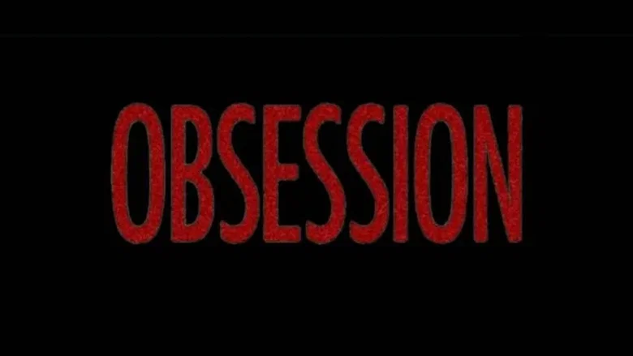
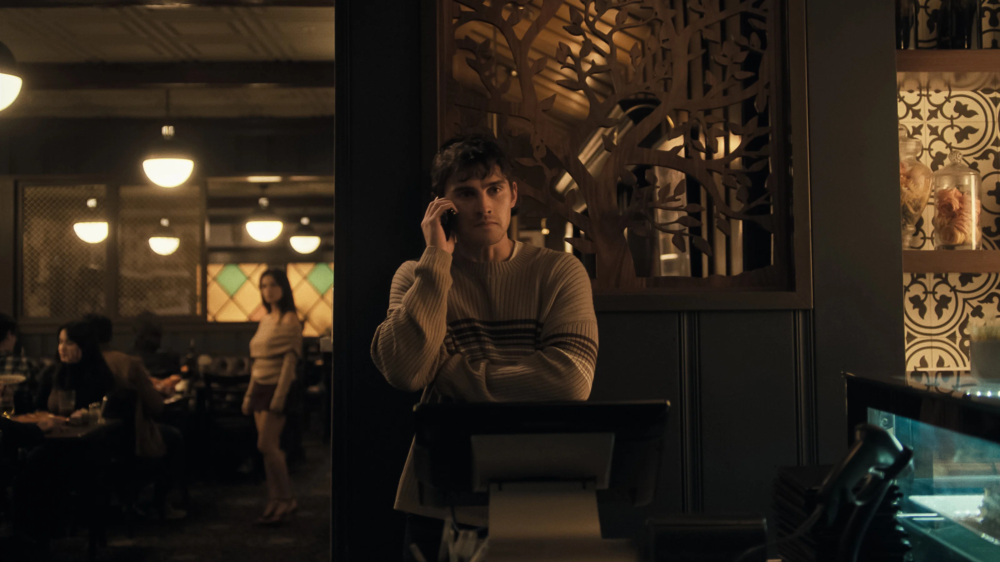
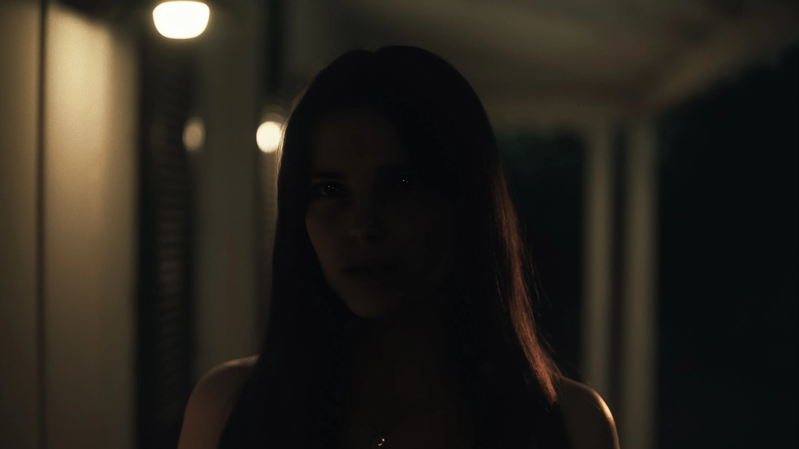

Note : 4/5
Simple, efficace, et ça marque. Un film d'horreur qui assume sa formule avec une maîtrise visuelle et sonore remarquable. La fin fissure un peu le tableau, mais l'expérience globale est redoutable.
⚠️ Attention : cette critique contient des éléments sur l'intrigue du film Obsession.

Un film qu'on n'attendait pas
Je ne voulais pas croire les avis car souvent les gens abusent, mais je dois dire que c'est un film vraiment surprenant. Vu en VF, je ne peux pas juger la performance auditive originale des acteurs, mais l'acting est vraiment bon dans la globalité. Même sous une autre voix, ça reste très fort, et le doublage français est excellent dans ce film.
Une ambiance malsaine dans le bon sens du terme
L'ambiance est tellement malsaine et horrible à supporter, dans le bon sens du terme. C'est angoissant et stimulant à la fois : tu veux connaître la prochaine folie et en même temps tu n'oses pas en savoir plus tellement c'est terrifiant. Ce double mouvement, cette fascination répulsive, c'est ce que les meilleurs films d'horreur savent créer. Obsession le fait bien.

Une réalisation visuelle soignée
La gestion des lumières est remarquable. Quand Nikki pète les plombs, elle est plongée dans le noir avec un certain reflet dans les yeux qui lui donne un côté démoniaque, un détail simple mais qui fait froid dans le dos. Le rythme se suit très bien, sans excès de lore. Tout est expliqué clairement et naturellement. C'est un film simple mais d'une efficacité redoutable.

Le duel intérieur de Nikki : le cœur du film
L'histoire est bien amenée et réussie. Le côté psychopathe de Nikki face à la vraie Nikki qui tente de reprendre le contrôle, c'est stupéfiant. La scène avec le jeu d'alcool et la bouteille est particulièrement surprenante et spontanée : en trois secondes il se passe tellement de choses que tu ne peux qu'être terrifié. C'est ce genre de séquence qui justifie à lui seul de voir le film.
Le son : un atout majeur
Les musiques sont parfaitement dans l'ambiance du film. Le son bascule quand Nikki redevient normale et inversement, et c'est tellement important, ça ajoute un vrai poids aux scènes. Ce travail sur le design sonore participe directement à l'efficacité du film, et c'est trop souvent sous-estimé dans l'horreur.
La fin : seule vraie réserve
La fin est le seul point faible selon moi. Le personnage du pote qui remarque les comportements de Nikki mais se dit que ce sont des bêtises, c'est un peu cousu de fil blanc. Et quand Nikki reprend ses esprits et se rend compte de tout ce qui s'est passé en rejetant le corps de l'homme qu'elle aimait, c'était une bonne idée, mais le reste perd en cohérence. Le pote qui demande un milliard à la fin, je n'ai pas trop compris l'intérêt. La fin me laisse donc un peu mitigé, mais ça n'entache pas l'expérience globale.
Un film qui mérite sa place dans le top
Ce film rentre honnêtement dans mon top 3 des films d'horreur. Je le recommande à tout le monde sans hésiter. C'est simple, efficace, et ça marque. Rarement un film de genre aura autant joué sur mes nerfs avec autant de précision et aussi peu de moyens apparents.